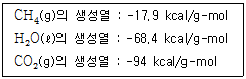
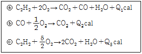
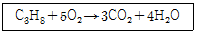
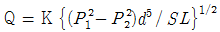
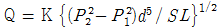
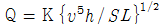
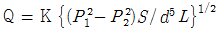
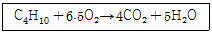
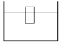

가스산업기사 (2004-05-23 기출문제)
1과목: 연소공학
1. 다음중 연소시 가장 낮은 온도를 나타내는 색깔은?
- 적색
- 백적색
- 황적색
- 회백색
(정답률: 88%)

2. 다음 중 연소의 관련된 사항이 아닌 것은?
- 흡열반응이 일어난다.
- 산소공급원이 있어야 한다.
- 연소시에 빛을 발생할 수 있어야 한다.
- 반응열에 의해서 연소 생성물의 온도가 올라가야 한다.
(정답률: 82%)
3. 다음 가스 중 연소와 관련한 성질이 다른 것은?
- 산소
- 부탄
- 수소
- 일산화탄소
(정답률: 71%)
4. 기체 연료를 미리 공기와 혼합시켜 놓고 점화해서 연소하는 것으로 혼합기만으로도 연소할 수 있는 연소방식은?
- 확산연소
- 예혼합연소
- 증발연소
- 분해연소
(정답률: 83%)
5. 폭굉유도거리에 대한 올바른 설명은?
- 최초의 느린 연소가 폭굉으로 발전할 때 까지의 거리
- 어느 온도에서 가열,발화,폭굉에 이르기까지의 거리
- 폭굉 등급을 표시할때의 안전간격을 나타내는 거리
- 폭굉이 단위시간당 전파되는 거리
(정답률: 82%)
6. CH4(g) + 2O2(g) 偵 CO2(g) +2H2O(ℓ )의 반응열은 얼마인가?

- -144.5 kcal
- -180.3 kcal
- -212.9 kcal
- -248.7 kcal
(정답률: 62%)
7. 아래 세 반응의 반응열 사이에서 Q3 = Q1 + Q2 의 식이 성립되는 법칙을 무엇이라 하는가?

- 돌톤의 법칙
- 헤스의 법칙
- 헨리의 법칙
- 톰슨의 법칙
(정답률: 71%)
8. 등유(C10H20)을 산소로 완전 연소시킬 때 산소와 발생한 탄산가스의 몰비는 얼마인가?
- 1 : 1
- 2 : 1
- 3 : 2
- 2 : 3
(정답률: 59%)
9. 공기와 혼합되어져 있는 상태에서 폭발 한계농도 범위가 가장 넓은 물질은?
- 에탄
- 에틸렌
- 메탄
- 프로판
(정답률: 71%)
10. 30℃, 1기압에서 수소 0.15g, 질소 0.90g, 암모니아 0.68g으로 된 혼합가스가 있다. 이 혼합가스의 부피는 약몇 L인가?(단, 원자량은 H : 1, N : 14)
- 3.66
- 2.97
- 1.73
- 0.011
(정답률: 48%)
11. 기체상수 R을 계산한 결과 1.987가 되었다. 이 때 단위로 올바른 것은?
- L·atm/mol.K
- cal/mol·K
- erg/kmol·K
- Joule/mol·K
(정답률: 76%)
12. 압력 1 atm, 온도 20℃ 에서 공기 1 kg의 부피를 구하면 몇 m3인가? (단, 공기의 평균분자량은 29임.)
- 0.42 m3
- 0.62 m3
- 0.75 m3
- 0.83 m3
(정답률: 68%)
13. 연소속도에 영향을 주는 요인이 아닌 것은?
- 화염온도
- 산화제의 종류
- 지연성물질의 온도
- 미연소가스의 열전도율
(정답률: 74%)
14. 연소파와 폭굉파에 관한 설명 중 옳은 것은?
- 연소파 : 반응 후 온도감소
- 폭굉파 : 반응 후 온도상승
- 연소파 : 반응 후 압력감소
- 폭굉파 : 반응 후 밀도감소
(정답률: 75%)
15. 가연성 가스의 위험성에 대한 설명으로 잘못된 것은?
- 폭발범위가 넓을수록 위험하다.
- 폭발범위 밖에서는 위험성이 감소한다.
- 온도나 압력이 증가할수록 위험성이 증가한다.
- 폭발범위가 좁고 하한계가 낮은 것은 위험성이 매우 적다.
(정답률: 83%)
16. 밀폐된 용기내에 1atm, 27℃ 프로판과 산소가 부피비로 1: 5의 비율로 혼합되어 있다. 프로판이 다음과 같이 완전연소하여 화염의 온도가 1000℃가 되었다면 용기내에 발생하는 압력은 얼마가 되겠는가?

- 1.95atm
- 2.95atm
- 3.95atm
- 4.95atm
(정답률: 71%)
17. 상온, 표준대기압하에서 어떤 혼합기체의 각 성분에 대한 부피백분율이 각각 CO2:20%, N2:20%, O2:40%, Ar:20% 이면 이 혼합기체 중 CO2분압은 ㎜Hg로 얼마인가?
- 152㎜Hg
- 252㎜Hg
- 352㎜Hg
- 452㎜Hg
(정답률: 57%)
18. 다음 중 비중이 가장 큰 물질은?
- 메탄
- 프로판
- 염소
- 이산화탄소
(정답률: 69%)
19. 두 물체가 열평형 상태에 있을 때 관련된 열역학 법칙은?
- 열역학제0법칙
- 열역학제1법칙
- 열역학제2법칙
- 열역학제3법칙
(정답률: 52%)
20. 다음 중 반응속도가 빨라지는 것은?
- 활성화 에너지가 작을수록 좋다.
- 열의 발산 속도가 클수록 좋다.
- 착화점과 인화점이 높을수록 좋다.
- 연소점이 높을수록 좋다.
(정답률: 62%)
2과목: 가스설비
21. 타 펌프에 비하여 정밀도가 높아 소유량 고양정에 매우 좋으며 소요마력이 적어 주로 보일러 급수용으로 쓰이는 펌프는?
- 원심 펌프
- 웨스코펌프
- 베인펌프
- 플런저 펌프
(정답률: 46%)
22. 가스액화 사이클의 종류가 아닌 것은?
- 비가역식
- 린데고압식
- 클라우드식
- 캐피자식
(정답률: 54%)
23. 왕복동식(용적용 펌프)에 속하지 않는 것은?
- 플런저 펌프
- 다이어프램 펌프
- 피스톤 펌프
- 제트 펌프
(정답률: 77%)
24. 촉매를 사용하여 반응온도 400~800℃ 로서 탄화수소와 수증기를 반응시켜 CH4, H2, CO, CO2 로 변화하는 공정은?
- 열분해공정
- 접촉분해공정
- 수소화분해공정
- 대체 천연가스공정
(정답률: 81%)
25. 흡입압력이 대기압과 같으며 최종압력이 124kg/m2· G의 3단 공기압축기의 압축비는 얼마 인가? (단, 대기압은 1kg/cm2 A로 한다.)
- 2
- 3
- 4
- 5
(정답률: 33%)
26. 왕복식 압축기의 특성에 대한 설명으로 옳지 않은 것은?
- 압축하면 맥동이 생기기 쉽다.
- 토출압력에 의한 용량 변화가 적다.
- 기체의 비중에 영향이 없다.
- 원심형이어서 압축 효율이 낮다.
(정답률: 73%)
27. 설정온도에서 용기내의 온도가 규정온도 이상이면 퓨즈가 녹아서 용기내의 전체 가스를 배출하는 구조로 되어 있는 밸브는?
- 파열판식 안전밸브
- 중추식 안전밸브
- 가용전식 안전밸브
- 스프링식 안전밸브
(정답률: 69%)
28. 고압가스 용기를 내압 시험한 결과 전증가량은 250cc, 영구 증가량이 15cc이다. 영구 증가율은 얼마인가? 또 이 용기는 내압 시험에 합격할 수 있는가?
- 6％, 불합격이다.
- 5.7％, 불합격이다.
- 5.7％, 합격이다.
- 6％, 합격이다.
(정답률: 62%)
29. 가스 배관으로 강재를 사용 할 경우 수분이 있으면 가장 피해가 큰 것은?
- 아세틸렌 배관
- 도시가스 배관
- 염소 배관
- 산소 배관
(정답률: 67%)
30. 총 발열량이 10,000[Kcal/Nm3], 비중이 1.2인 도시가스의 웨베지수는?
- 12000
- 8333
- 10954
- 9129
(정답률: 73%)
31. 도시가스 배관의 내진설계 기준에서 일반도시가스사업자가 소유하는 배관의 경우 내진 1등급에 해당되는 가스 최고사용압력은?
- 1.5MPa
- 5 MPa
- 0.5MPa
- 6.9MPa
(정답률: 58%)
32. SNG 에 대한 설명으로 옳은 것은?
- SNG는 순수 천연가스를 뜻한다.
- SNG는 각 부생가스로 고로가스가 주성분이다.
- SNG는 각종 도시가스의 총칭이다.
- SNG는 대체(합성) 천연가스를 뜻한다.
(정답률: 76%)
33. 가스 연소시 역화(flash back)의 원인이 아닌 것은?
- 가스압력이 낮아진 때
- 노즐의 부식
- 과다한 가스의 공급
- 버너의 과열
(정답률: 51%)
34. 자연기화와 비교한 기화기 사용 시 특징으로 거리가 먼 것은?
- LPG 종류에 관계없이 한냉시에도 충분히 기화된다.
- 공급가스의 조성이 일정 하다.
- 기화량을 가감할 수 있다.
- 설비장소가 적게 들지만 설비비는 많이 든다.
(정답률: 72%)
35. 탄소강에 각종 원소를 첨가하면 특수한 성질을 지니게 되는데 각 원소의 영향을 바르게 연결한 것은?
- Ni - 내마멸성 및 내식성 증가
- Cr - 인성 및 저온충격저항 증가
- Mo - 고온에서 인장강도 및 경도 증가
- Cu - 전자기성 및 경화능력 증가
(정답률: 65%)
36. 가스액화 분리장치의 구성 요소가 아닌 것은?
- 한냉 발생장치
- 정류장치
- 불순물 제거장치
- 접촉 분해장치
(정답률: 51%)
37. 강의 열처리에서 적당한 경도를 얻기 위하여 가열 후 급속히 냉각시키는 작업은?
- 담금질(quenching)
- 뜨임(tempering)
- 풀림(annealing)
- 노오멀라이징(normalizing)
(정답률: 61%)
38. 사용압력이 중· 고압인 도시가스 배관의 유량을 구하는 식은? (단, K=유량계수, P1=초압, P2=종압, L=배관길이, S=비중, υ =동점도 이다.)




(정답률: 53%)
39. 전기방식법 중 외부전원법에 대한 설명으로 거리가 먼 것은?
- 간섭의 우려가 있다.
- 설비비가 비교적 고가이다.
- 방식전류의 양을 조절할 수 있다.
- 방식 효과 범위가 좁다.
(정답률: 64%)
40. 정압기에 대한 설명으로 옳지 않은 것은?
- 직동식은 파일럿식에 비해 일반적으로 응답속도가 빠르다.
- 파일럿식은 높은 압력의 제어 정도가 요구되는 경우에 적합하다.
- 직동식은 2차 압력이 설정압력보다 높아진 경우에 밸브가 열리는 구조로 되어 있다.
- 파일럿식은 언로딩형과 로딩형으로 나눌 수 있다.
(정답률: 61%)
3과목: 가스안전관리
41. 아세틸렌용기의 다공물질의 다공도를 측정하기 위해 사용되는 물질이 아닌 것은?
- 아세톤
- 디메틸포름아미드
- 물
- 메탄올
(정답률: 53%)
42. 액화석유가스 저장탱크를 지하에 묻는 경우의 설치 기준으로 옳지 않은 것은?
- 저장탱크를 묻는 곳의 주위에는 경계선을 지상에 표시 한다.
- 지면으로부터 저장탱크의 정상부까지의 깊이는 60cm 이상으로 한다.
- 저장탱크가 2개 이상 설치될 때 탱크사이의 간격은 2m 이상의 거리를 유지한다.
- 저장탱크실을 만들 때는 30cm 이상의 두께로 방수 조치한 철근콘크리트로 한다.
(정답률: 73%)
43. 다음 중 용기의 각인 표시 사항이 틀린 것은?
- 내용적 : V
- 내압시험압력 : TP
- 최고충전압력 : HP
- 동판 두께 : t
(정답률: 81%)
44. 도시가스배관은 지진발생시 피해규모에 따라 내진등급을 구분하고 있다. 내진1등급 배관을 옳게 나타낸 것은?
- 최고사용압력이 0.5MPa 이상인 배관
- 최고사용압력이 3MPa 이상인 배관
- 최고사용압력이 5MPa 이상인 배관
- 최고사용압력이 6.9MPa 이상인 배관
(정답률: 45%)
45. 다음 중 의료용 가스용기의 도색 표시가 옳게 된 것은?
- 질소 - 백색
- 액화탄산가스 - 회색
- 헬륨 - 자색
- 산소 - 흑색
(정답률: 75%)
46. 독성 가스의 배관중 2중관의 외층관 내경은 내층관 외경의 몇 배로 하여야 하는가?
- 1.2배 이상
- 1.5배 이상
- 2.0배 이상
- 2.5배 이상
(정답률: 33%)
47. 고압가스 충전 용기의 운반 기준 중 운반책임자가 동승하지 않아도 되는 경우는?
- 가연성 압축가스 400m3을 차량에 적재하여 운반하는 경우
- 독성 압축가스 90m3을 차량에 적재하여 운반하는 경우
- 조연성 액화가스 6500㎏을 차량에 적재하여 운반하는 경우
- 독성 액화가스 1200㎏을 차량에 적재하여 운반하는 경우
(정답률: 63%)
48. 고압가스충전시설의 압축기 최종단에 설치된 안전밸브의 점검주기로 옳은 것은?
- 매월 1회이상
- 1년에 1회이상
- 1주일에 1회이상
- 2년에 1회이상
(정답률: 61%)
49. 액화석유가스의 특성에 대한 설명으로 옳지 않은 것은?
- 액체는 물보다 가볍고, 기체는 공기보다 무겁다.
- 액체의 온도에 의한 부피변화가 작다.
- 일반적으로 LNG보다 발열량이 크다.
- 연소시 다량의 공기가 필요하다.
(정답률: 65%)
50. 조정압력이 3.3kPa 이하인 조정기의 안전장치 작동 표준 압력은?
- 3kPa
- 5kPa
- 7kPa
- 10kPa
(정답률: 40%)
51. 부취제의 구비 조건으로 옳지 않은 것은?
- 독성이 없을 것
- 부식성이 없고 화학적으로 안정할 것
- 수용성으로 토양에 대한 투과성 좋을 것
- 완전연소 후 유해가스 발생이 없고 응축되지 않을 것
(정답률: 77%)
52. 다음 독성가스중 허용농도가 가장 낮은 가스는?
- 암모니아
- 염소
- 산화에틸렌
- 포스겐
(정답률: 63%)
53. 도시가스배관의 접합부분에 대한 원칙적인 연결방법은?
- 용접접합
- 플렌지접합
- 기계적적합
- 나사접합
(정답률: 64%)
54. 공기액화분리기의 운전을 중지하여야 하는 조건으로 옳은 것은?
- 액화산소 5ℓ 중 아세틸렌 질량이 2㎎ 함유
- 액화산소 5ℓ 중 아세틸렌 질량이 4㎎ 함유
- 액화산소 5ℓ 중 탄화수소의 탄소질량이 400㎎ 함유
- 액화산소 5ℓ 중 탄화수소의 탄소질량이 600㎎ 함유
(정답률: 47%)
55. 동절기 등 습도가 50% 이하인 경우에는 수소용기 밸브의 개폐를 특히 서서히 하여야 한다. 그 이유는 무엇인가?
- 밸브파열
- 분해폭발
- 정전기방지
- 용기압력유지
(정답률: 79%)
56. 공기중에서 연소범위가 가장 넓은 가스는?
- 에탄
- 에틸렌
- 프로판
- 프로필렌
(정답률: 55%)
57. 도시가스사용시설중 가스누출경보차단장치 또는 가스누출 자동차단기의 설치 대상이 아닌 것은?
- 특정가스사용시설
- 지하에 있는 음식점의 가스사용시설
- 식품접객업소로서 영업장면적이 100m2 이상인 가스 사용시설
- 가스보일러가 설치된 가정용 가스사용시설
(정답률: 76%)
58. 다음 중 LPG 저장용기에 대한 설명으로 가장 거리가 먼 것은?
- 용기의 재질은 탄소강을 주로 사용한다.
- 용기의 색은 회색이다.
- 스프링식 안전밸브를 사용한다.
- 내압시험 압력은 15.6 kg/㎝2 이하이다.
(정답률: 60%)
59. 부탄가스의 완전연소방정식을 다음과 같이 나타낼 때 화학양론 농도(Cst)는? (단, 공기중 산소는 21% 이다.)

- 1.8%
- 3.1%
- 5.5%
- 8.9%
(정답률: 63%)
60. 연소기에서 역화(Flash Back)가 발생하는 경우를 바르게 설명한 것은?
- 가스의 분출속도보다 연소속도가 느린 경우에 발생
- 부식에 의해 염공이 커진 경우
- 가스압력의 이상 상승시에 발생
- 가스량이 과도할 경우 발생
(정답률: 61%)
4과목: 가스계측
61. 접촉식과 비접촉식 온도계를 비교 설명한 것 중 옳은 것은?
- 접촉식은 움직이는 물체의 온도측정에 유리하다.
- 일반적으로 접촉식이 더 정밀하다.
- 접촉식은 고온의 측정에 적합하다.
- 접촉식은 물체의 표면온도 측정에 주로 이용된다.
(정답률: 48%)
62. 도시가스회사에서는 가스홀더에서 매주 성분분석을 하는 데 다음 중 유해성분이 아닌 것은?
- H2S
- S
- NH3
- H2
(정답률: 74%)
63. 전자유량계의 측정원리는?
- Rutherford 법칙
- Faraday 법칙
- Joule 법칙
- Bernoulli 법칙
(정답률: 79%)
64. 소형이며 대용량의 가스 측정에 적합하며 특히 중압가스의 계량도 가능한 가스미터는?
- 막식가스미터
- 루트미터
- 습식가스미터
- 오리피스미터
(정답률: 89%)
65. 막식 가스계량기에서 가스가 가스계량기를 통과하나 지침이 작동하지 않는 고장을 무엇이라 하는가?
- 부동(不動)
- 불통(不通)
- 기차(器差)불량
- 누설(漏泄)
(정답률: 78%)
66. 3× 3× 9cm의 직육면체로된 물체를 그림과 같이 물에 담그었더니 2/3가 물에 잠겼다. 이 물체의 비중은? (단, 물의 밀도는 1.0 g/cm3 이다. )

- 0.45
- 0.67
- 0.85
- 0.97
(정답률: 60%)
67. 검지가스와 반응하여 변색하는 시약을 여지 등에 침투시켜 검지하는 방법은?
- 시험지법
- 검지관법
- 헴펠(Hempel)법
- 가연성 가스 검출기법
(정답률: 49%)
68. 가스미터 선정시 주의사항으로 옳지 않은 것은?
- 액화가스용일 것
- 내압, 내열성이 좋을 것
- 가스의 사용 최소유량에 적합한 계량능력의 것일 것
- 사용 중 기차변화가 없을 것
(정답률: 54%)
69. 차압식 유량계 중 오리피스식이 벤투리식보다 좋은 특징을 갖는 것은?
- 내구성이 좋다
- 정밀도가 높다
- 제작비가 싸다
- 압력손실이 적다
(정답률: 32%)
70. 다음 중 계통오차가 아닌 것은?
- 계기오차
- 환경오차
- 과오오차
- 이론오차
(정답률: 70%)
71. 초음파 레벨 측정기의 특징으로 옳지 않은 것은?
- 측정대상에 직접 접촉하지 않고 레벨을 측정할 수 있다.
- 부식성 액체나 유속이 큰 수로의 레벨도 측정할 수 있다.
- 측정범위가 넓다.
- 고온, 고압의 환경에서도 사용이 편리하다.
(정답률: 58%)
72. 열전대온도계의 종류 및 특성에 대한 설명으로 거리가 먼 것은?
- R형은 접촉식으로 가장 높은 온도를 측정할 수 있다.
- K형은 산화성 분위기에서는 열화가 빠르다.
- J형은 철과 콘스탄탄으로 구성되며 산화성 분위기에 강하다.
- T형은 극저온 계측에 주로 사용된다.
(정답률: 69%)
73. 벨로즈식 압력계에서 압력 측정 시 벨로즈 내부에 압력이 가해질 경우 원래 위치로 돌아가지 않는 현상을 의미하는 것은?
- limited 현상
- bellows 현상
- end all 현상
- hysteresis 현상
(정답률: 82%)
74. 금속제의 저항이 온도가 올라가면 증가하는 원리를 이용한 저항온도계가 갖추어야 할 조건으로 거리가 먼 것은?
- 저항온도계수가 적을 것
- 기계적으로, 화학적으로 안정할 것
- 교환하여 쓸 수 있는 저항요소가 많을 것
- 온도저항 곡선이 연속적으로 되어 있을 것
(정답률: 46%)
75. 가스 크로마그래피법의 특징이 아닌 것은?
- 응답속도가 늦다.
- 선택성이 낮고 고감도로 측정할 수 있다.
- 분리능력이 좋고 여러 종류의 가스분석이 가능하다.
- 미량성분의 분석이 가능하지만 캐리어가스가 필요하다.
(정답률: 40%)
76. 편차의 크기에 비례하여 조절요소의 속도가 연속적으로 변하는 동작은?
- 적분동작
- 비례동작
- 미분동작
- 온-오프동작
(정답률: 45%)
77. 오리피스 유량계의 측정원리로 옳은 것은?
- 하이젠-포아제 원리
- 팬닝법칙
- 아르키메데스 원리
- 베르누이 원리
(정답률: 83%)
78. 힘(f )을 가하여 스프링이 신장(y )되었다면, 이와 같은 제어동작은?
- 적분(I )동작
- 미분(D )동작
- 비례(P )동작
- 비례적분(PI )동작
(정답률: 56%)
79. 실측식 가스미터가 아닌 것은?
- 터빈식 가스미터
- 건식 가스미터
- 습식 가스미터
- 막식 가스미터
(정답률: 77%)
80. 건조공기 단위질량에 수반되는 수증기의 질량은 어느 습도에 해당되는가?
- 상대습도
- 절대습도
- 몰습도
- 비교습도
(정답률: 46%)